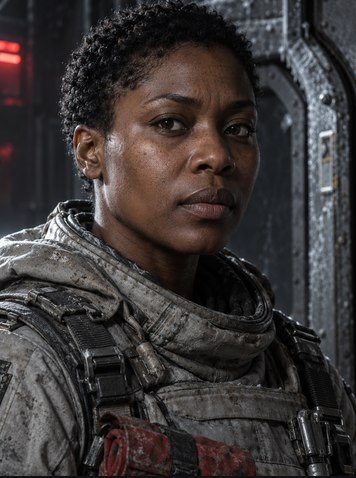
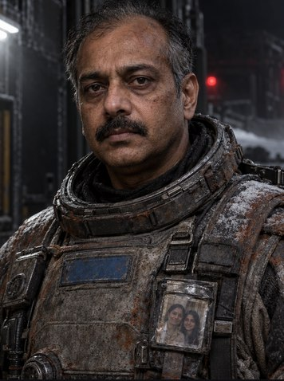
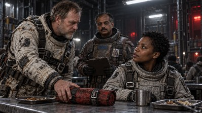
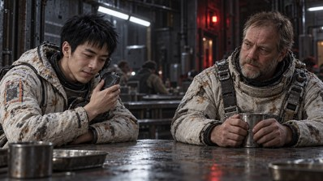

248a Design a voice makes two, priced
The Red Quiet · cast · Imani OkoroArkeStudio

Imani Okoro
No voice yet
Reads linesnot set · the narrator reads her linesSet
On screennot setSet
Get a voice
Design two voicesfrom the sheetGemini · ~$0.31
Choose a voicethe cataloguecloud and on this machine
Clone a voicerecord · 3 seconds or morewav · mp3
Upload a recordinga file on this machinewav · mp3
Generate a speaking samplefrom the accepted photopriced before it runs
Design two voices
Drafted from Imani’s sheet
AImani Okoro · Aen-NG150 a minute
A Nigerian woman in her mid-thirties, a maintenance engineer on a mining colony. A natural, educated Nigerian English accent from the south-east, worn lightly and never exaggerated: even syllable timing, clear open vowels and firm consonants. Mid pitch, warm but dry, with a little grain from long shifts in cold, recycled air. Practical and plain: she speaks to get a job done, asks for a number before she offers comfort, and a quiet, deadpan humour sits under ordinary lines. Under pressure she gets lower and steadier rather than louder. Close to the microphone and conversational, at about 150 words a minute. No sing-song lilt, no performed emotion, no breathiness.
BImani Okoro · Ben-NG160 a minute
A thirty-four-year-old Nigerian woman from Enugu, a mechanic used to being heard over running machinery. A clear Nigerian English accent with a light Igbo colouring, natural and unforced, the way she speaks at work every day. A slightly lower, fuller voice with a firm chest tone and crisp, clipped consonants. Composed and economical with management, warmer and quicker with her own crew, with a hint of a dry smile in throwaway lines. When frightened she becomes terse and exact, never shrill. Direct and grounded, at a brisk conversational pace of about 160 words a minute. Not theatrical, not breathy, never a caricature.
Scene 8You can complain about my workmanship when we get home.A light with nobody carrying it
Scene 12Dev. Wait for me to tell you.The warm point
Gemini 3.8 Flash TTS · 2 voices · 2 readsCancelDesign both · ~$0.31
248b Imani: both reads measured, Arke picks B
The Red Quiet · cast · Imani OkoroArkeStudio
Imani Okoro
Audition
2 voices · 2 lines · Gemini 3.8 Flash TTS · $0.31Design againArke’s pick: B. A runs “home. Dev.” together, so Dev joins the first line. B’s run-on, “Dev, wait”, keeps the meaning. Both read fast for their briefs.
Not measured: accent
AImani Okoro · A5.3 splayed
Brief · mid pitch, warm, dry · 150 a minute
You can complain about my workmanship when we get home.no pauseDev.0.37 s Wait for me to tell you.
Pace207 a minutebrief 150Fast
Stops1 of 2“home.” no pauseRun-on
Words17 of 17as written
Pitch148 Hzmiddle 126–213
Loudness−18.5 LUFSpeak −2.1 dBFS
Use A
BImani Okoro · BArke’s pick5.1 splayed
Brief · lower, fuller · 160 a minute
You can complain about my workmanship when we get home.0.64 s Dev.no pauseWait for me to tell you.
Pace213 a minutebrief 160Fast
Stops1 of 2“Dev.” no pauseRun-on
Words17 of 17as written
Pitch149 Hzmiddle 95–238
Loudness−15.0 LUFSpeak −1.6 dBFS
Use B
Pitch
80100120140160180200220240260
median · middle 80%
AImani · A mid pitch
148 Hz 126–213
BImani · B lower, fuller
149 Hz 95–238
248c Lin Wei: briefed a tenor, read lower
The Red Quiet · cast · Lin WeiArkeStudio

Lin Wei
Audition
2 voices · 2 lines · Gemini 3.8 Flash TTS · $0.31Design againArke’s pick: B. A was briefed the higher voice, a light tenor, and reads at 97 Hz, 10 Hz under B. A also runs “channel. Local” together. B keeps every stop.
Not measured: accent
ALin Wei · A10.0 splayed
Brief · light, clear tenor · 160 a minute
I have the whole channel.no pauseLocal picture and sound.0.27 s I have it.0.47 s I kept another copy.0.17 s Whatever you put in the packet, I am keeping mine.
Pace166 a minutebrief 160
Stops3 of 4“channel.” no pauseRun-on
Words26 of 26as written
Pitch97 Hzmiddle 84–127Lower than B
Loudness−18.7 LUFSpeak −1.7 dBFS
Use A
BLin Wei · BArke’s pick9.6 s
Brief · light baritone, lower, softer · 145 a minute
I have the whole channel.0.67 s Local picture and sound.0.46 s I have it.0.65 s I kept another copy.0.64 s Whatever you put in the packet, I am keeping mine.
Pace171 a minutebrief 145
Stops4 of 4all kept
Words26 of 26as written
Pitch107 Hzmiddle 85–127
Loudness−21.1 LUFSpeak −1.8 dBFS
Play B firstUse B
Pitch
708090100110120130140150
median · middle 80%
ALin Wei · A light tenor
97 Hz 84–127
BLin Wei · B light baritone
107 Hz 85–127
248d The cast: a pick each, chosen one by one
The Red Quiet · First Contact · CastArkeStudio
R
First Contact / Cast
Cast voices
CharacterABArke’s pick
Imani Okoro
A148 Hz · 207
FastRun-on
B149 Hz · 213
FastRun-on
B · A runs “home. Dev.” together
Using B

Dev MalikA104 Hz · 165
clean
B139 Hz · 196
Short stop
A · B cuts the stop after “I fired.”
Choose
Lin WeiA97 Hz · 166
Run-on
B107 Hz · 171
clean
B · A, briefed the higher, reads lower
Using B
 Ana Lucía Reyes
Ana Lucía ReyesA168 Hz · 196
Fast
B165 Hz · 187
clean
A · B, briefed brighter, reads no higher
Choose
Elsie Ward
A210 Hz · 168
clean
B180 Hz · 173
Short stop
A · B sits close to Ana’s pitch
Choose
 Tomas Vale
Tomas ValeA107 Hz · 176
FastShort stop
B94 Hz · 220
Fast2 run-ons
A · B runs “Go on. Get to the landing.”
Choose
Pitch
Arke’s picks · Hz
80120160200240
Elsie · A210
Ana · A168
Imani · B149
Narrator148
Close · 148–149
Lin Wei · B107
Tomas · A107
Dev · A104
Close · 104–107
248e World Chat: a judgement and its evidence
The Red Quiet · First Contact · CastArkeStudio
R
First Contact / Cast
Cast voices
CharacterABArke’s pick
Imani Okoro
A148 Hz · 207
FastRun-on
B149 Hz · 213
FastRun-on
B · A runs “home. Dev.” together
Dev Malik
A104 Hz · 165
clean
B139 Hz · 196
Short stop
A · B cuts the stop after “I fired.”
Lin WeiA97 Hz · 166
Run-on
B107 Hz · 171
clean
B · A, briefed the higher, reads lower
Ana Lucía ReyesA168 Hz · 196
Fast
B165 Hz · 187
clean
A · B, briefed brighter, reads no higher
Elsie Ward
A210 Hz · 168
clean
B180 Hz · 173
Short stop
A · B sits close to Ana’s pitch
Tomas ValeA107 Hz · 176
FastShort stop
B94 Hz · 220
Fast2 run-ons
A · B runs “Go on. Get to the landing.”
World ChatThe Red Quiet
Do Dev, Lin Wei and Tomas sound different enough?
Arke
Measured 4 reads
Not by pitch. All three read at 104 to 107 Hz.
Pace parts them a little. Accent has to do the rest, and I can’t judge accent.
Dev’s B reads at 139 Hz and would stand apart, but it cuts the stop after “I fired.”
Pitch and pace4 reads · on this machine
80100120140160180
Dev MalikA · pick104 Hz165 a minute
Lin WeiB · using107 Hz171 a minute
Tomas ValeA · pick107 Hz176 a minute
Dev MalikB139 Hz196 a minute
Play the threeHear Dev BClose · 104–107
World
Ask about your world…
248f What Arke cannot hear: accent
The Red Quiet · cast · Imani OkoroArkeStudio
Imani Okoro
Audition
2 voices · 2 linesDesign againArke’s pick: B. A runs “home. Dev.” together, so Dev joins the first line.
Not measured: accent
AImani Okoro · A5.3 splayed
Brief · mid pitch, warm, dry · 150 a minute
You can complain about my workmanship when we get home.no pauseDev.0.37 s Wait for me to tell you.
Pace207 a minutebrief 150Fast
Stops1 of 2“home.” no pauseRun-on
Words17 of 17as written
Pitch148 Hzmiddle 126–213
Loudness−18.5 LUFSpeak −2.1 dBFS
Use A
BImani Okoro · BArke’s pick5.1 splayed
Brief · lower, fuller · 160 a minute
You can complain about my workmanship when we get home.0.64 s Dev.no pauseWait for me to tell you.
Pace213 a minutebrief 160Fast
Stops1 of 2“Dev.” no pauseRun-on
Words17 of 17as written
Pitch149 Hzmiddle 95–238
Loudness−15.0 LUFSpeak −1.6 dBFS
Use B
World ChatThe Red Quiet
Is Imani’s accent right?
Arke
Read 2 measures
I can’t tell. I measure pace, stops, words and pitch, not how an accent sounds.
Both reads have every word at the same pitch, so accent is the real choice here. Play A and B and trust your ear, or someone who knows Enugu English.
Not measured
AccentEmotionHow a name is said
MeasuredImani Okoro
- A
- 148 Hz · 207 a minuterun-on: “home. Dev.”
- B
- 149 Hz · 213 a minuterun-on: “Dev, wait”
Play APlay B
World
Ask about your world…
248g Table read: three lines to check, each with Redo
The Red Quiet · First Contact · visual novelArkeStudio
R
First Contact / Scenes
Scene 1 · Six places at the table
1

Narrator
Tomas puts my tool roll on the meal table with the buckle repaired. I tell him I had not asked. He says that was why it got done.
voiced 0:12 · after the line
“Tomas” heard as Thomas
2
Dev Malik
Eat before the next clearance. The officer wants the plain signed off by six.
voiced 0:05 · after the line
3
Narrator
Elsie draws the proposed bore on the back of her meal wrapper. The straight line crosses three warm patches on the survey. I have already initialled the clearance beside them.
voiced 0:11 · after the line
4
Elsie Ward
They moved between passes. Probably heat shedding through the crust.
voiced 0:05 · after the line
Wrong voice158 Hz · near Ana
Redo ~$0.002
5
Ana Lucía Reyes
Probably is doing a lot of work in this room.
voiced 0:03 · after the line
6

Narrator
Wei plays a message from his mother. Traffic horns crowd the little speaker. He apologises for the noise. Nobody asks him to stop it.
voiced 0:10 · after the line
7
Lin Wei
Six seats in the service shuttle. Programmed rendezvous with the supply tender. I checked the navigation yesterday.
voiced 0:07 · after the line
Run-on“shuttle.” no pause
Redo ~$0.002
8
Tomas Vale
Check the launch connection as well. That collar sticks. You need somebody in the outside pit if the remote lets go.
voiced 0:07 · after the line
9
Narrator
Dev collects our empty plates. Through the mess window a white line of fire passes over the landing ground. Beyond it, the warm patches are moving east. I put my name beside the clearance.
voiced 0:15 · after the line
Missing words“of fire” not heard
Redo ~$0.005
Arke · Scene 1
Voice the lines.
Nine lines voiced, 1:13. Three to check.
Beat 7: Lin Wei runs “shuttle. Programmed” together.
Beat 4: Elsie’s line sits at Ana’s pitch.
Beat 9: “of fire” is missing.
Beat 1: listen to how “Tomas” is said.
Redo 3 · ~$0.01Play the scene
Ask Arke about this scene…
Connected · First ContactThe Red Quiet
248h A take’s measure: Redo with a pause
The Red Quiet · First Contact · visual novelArkeStudio
R
First Contact / Scenes
Scene 1 · Six places at the table
1
Narrator
Tomas puts my tool roll on the meal table with the buckle repaired. I tell him I had not asked. He says that was why it got done.
voiced 0:12 · after the line
“Tomas” heard as Thomas
2
Dev Malik
Eat before the next clearance. The officer wants the plain signed off by six.
voiced 0:05 · after the line
3
Narrator
Elsie draws the proposed bore on the back of her meal wrapper. The straight line crosses three warm patches on the survey. I have already initialled the clearance beside them.
voiced 0:11 · after the line
4
Elsie Ward
They moved between passes. Probably heat shedding through the crust.
voiced 0:05 · after the line
Wrong voice158 Hz · near Ana
Redo ~$0.002
5
Ana Lucía Reyes
Probably is doing a lot of work in this room.
voiced 0:03 · after the line
6
Narrator
Wei plays a message from his mother. Traffic horns crowd the little speaker. He apologises for the noise. Nobody asks him to stop it.
voiced 0:10 · after the line
7
Lin Wei
Six seats in the service shuttle. Programmed rendezvous with the supply tender. I checked the navigation yesterday.
voiced 0:07 · after the line
Run-on“shuttle.” no pause
Redo ~$0.002
8
Tomas Vale
Check the launch connection as well. That collar sticks. You need somebody in the outside pit if the remote lets go.
voiced 0:07 · after the line
9
Narrator
Dev collects our empty plates. Through the mess window a white line of fire passes over the landing ground. Beyond it, the warm patches are moving east. I put my name beside the clearance.
voiced 0:15 · after the line
Missing words“of fire” not heard
Redo ~$0.005
Scene 1 / Beat 7
Lin Wei
Voice
Lin Wei · BGemini 3.8 Flash TTS · 0:07Run-on
Heard
Six seats in the service shuttle.no pauseProgrammed rendezvous with the supply tender.0.38 s I checked the navigation yesterday.
Pace170 a minuteaudition 171
Stops1 of 2“shuttle.” 0.06 sRun-on
Words17 of 17as written
Pitch83 Hzaudition 107
Loudness−19.6 LUFSpeak −2.0 dBFS
Redo sends
Six seats in the service shuttle.
Gemini 3.8 Flash TTS · ~$0.002
<short pause> Programmed rendezvous with the supply tender. I checked the navigation yesterday.Gemini 3.8 Flash TTS · ~$0.002
KeepRedoRedo with a pause
Connected · First ContactThe Red Quiet